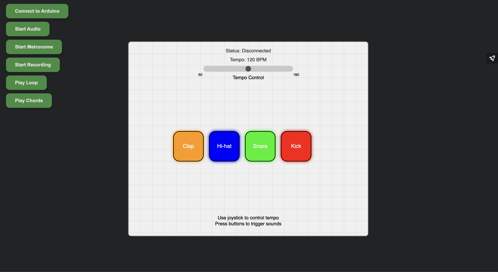

Project Overview
This project combines Arduino and p5.js to create a browser-based drum machine. Users can trigger drum sounds with buttons, control tempo with a joystick, play along a simple chord progression, and record/playback drum loops. The Arduino communicates with the browser using the Web Serial API.
Key Features
- 4-drum layout (Kick, Snare, Hi-hat, Clap), controlled from arduino buttons
- Joystick-controlled tempo, able to lock/unlock in place
- Loop recording and playback
- Visual feedback on the canvas
- Optional 4-chord progression accompaniment
How It Works
The p5.js sketch listens to inputs from the Arduino over serial. Drums are triggered by digital button pins, tempo is controlled with analog joystick inputs, and pressing the joystick button locks the tempo. The metronome is shown via a red dot appearing in the middle of the screen every beat in 4/4 timing. Users can record a short pattern and loop it back.
Schematics & Hardware
- Joystick module (X: A1, Y: A2, Button: D7)
- 4 drum buttons (D2–D5)
- Passive Buzzer for direct sound from arduino(D6), optional
Demo Video
Images

Future Development
- Add quantization to improve timing accuracy in loops
- Add ability to add your own sounds for the drums
- Add support for more diverse chord progressions
- Include volume control for individual drums
- Extend to support MIDI out or external synths
- Create user profiles to save patterns
Credits
Designed and developed by Darrius Anthony(Spring 2025, LSU)